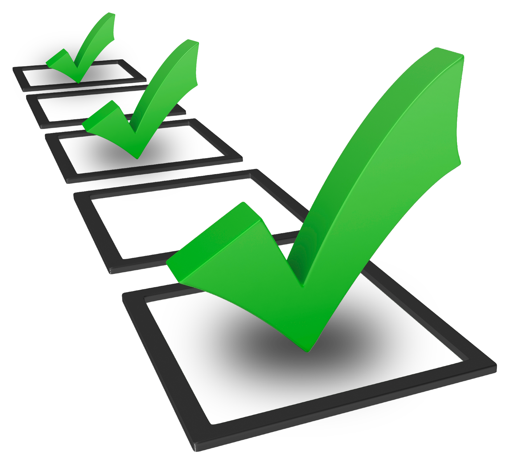

Write the vision and make it plain

Rohn's take on how to truly decide what we want in the future is key, as he mentions that we must know where we are presently and deeply ascertain if we are satisfied with our current state of affairs. So, ask yourself, "...Am I content?"
"In order to know where you're going, you must know where you've been."--James Baldwin
"Insanity is doing the same thing over and over again and expecting a different result."--Albert Einstein
These action verbs play artfully together just as the aforementioned quotes. How could one fathom to correct a course of action if they do not know where they erred in the first place. By reflecting on our past we give our future endeavors a chance to thrive and triumph.
So take a moment to reflect on the goals you set and
My mother once told me, "Dreams are goals with deadlines". No matter how eccentric or idiosyncratic your dreams may be, they are feasible. In the same way that people do not eat an elephant whole, we do not accomplish one gargantuan endeavor at one time. We break the best up into pieces. Sure, we have heard this alegorical story before as Mike Martel, author of Don't Eat the Elephant One Bite at a Time(2015) , has astutely pointed out. I, for one, must agree with him. Over time, trying to tackle this monstrosity of a task get old, it start to smell. It feels as if the task you laid out is unmoving and just seems like it is more trouble than it is worth. Thus, thoughts of dropping the task all together echoes tauntingly in the ears.
Don't fret
Martell states that instead of an elephant dinner for one, it would be best to have a feast or a Zydeco party for many. In other words, invite others that share your values, understand your mission, and are invested in seeing your endeavor become a reality.
Ensure that you lay out the different tasks that needs to be accomplished to see that your dream comes to fruition. Allow those that are willing to help you pick up a task that they feel qualified to carry out as well as truly fascinated and eager to complete.
Goals are best executed when they are clear-cut and crafted meticulously. Designing your goals based upon the acronym SMART will not only allow you and your team to understand what is expected, but will give you all a sense of accomplishment when the goals are met. Break down you endeavor into distinct and delineated goals.
Specific
Be definitive in each of your goals to accomplish the main endeavor. When this goal is met how do you envision it as accomplished. What, Why, and How. 
Measurable
This requires tangible evidence, as declared by the University of Virgina's Human Resources. How will you know that the task is accomplished?
Attainable
Certainly, push yourself and others to achieve a goal, but the goal should not be so far removed that it is impossible to accomplish. This may serve as a challenge and a way to motivate yourself and others. Certify that each person has the proper resources and tools to accomplish the goals set before them.
Realistic
Guarantee that the goals are not based on activities being completed, but results-focused. The goal must be accomplished as it was intended.
Time
Lastly, each goal should have a timeframe as to when it is to be completed. This will create a sense of urgency as well as allow you and your team to reconvene and rally in the accomplishment and progress of the endeavor as a whole. Additionally, this will allow you to re-evaluate and view any areas for improvement.
Having accountability indicated to each person the seriousness of the endeavor as well as helps you stay on track. Embrace it!